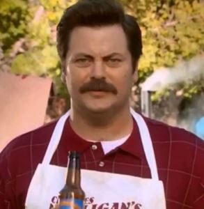
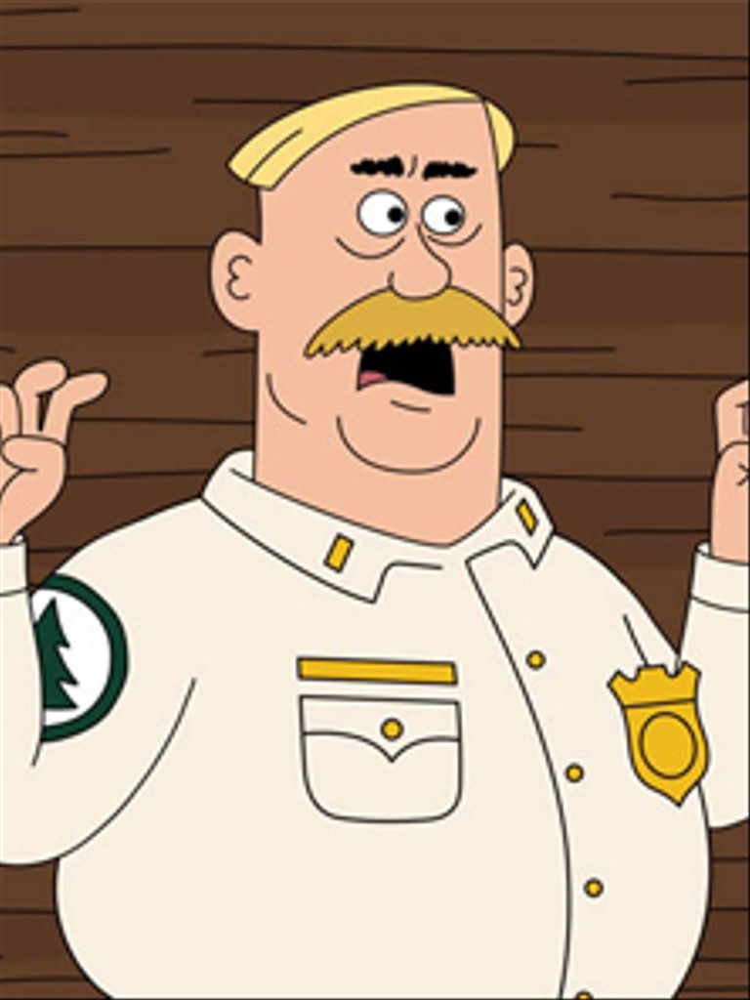
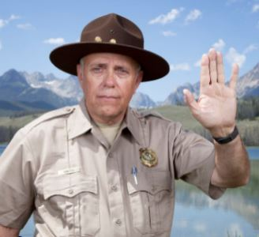

About Us
Duke Silver
 Duke Silver is a jazz saxophonist, playing the tenor saxophone, and is the leader of The Duke Silver Trio. He performs at Cozy's Bar in Eagleton, Indiana, on the second Thursday of every month. Duke Silver is also very passionate about the trails of North Georgia. While Duke was in college at Georgia State University, a professor told him that he needed to create a website. So a website he created. This website had trails in North Georgia. Duke has put all of his effort into creating this somewhat okay website with excellent user interface. Look at it. It is amazing. Give this website an A+. It clearly deserves it.
Woody Johnson
 After winning the olympics in 1969, Woody Johnson became a cartoon. While being a fictional character, Woody Johnson devoted decades of his life working to preserve the wild life in the North Georgia mountains. Woody once hiked every mile of trail in one week while wearing stilts.
Woody Recommends the following if you choose to come to our trails.
- toilet paper
- a hacky sack
- a bicycle
- one of those squirt bottle fans
- sunscreen
Ranger Rick
 Ranger Rick is more mystery than man. He has been a long time supporter of the trails of North Georgia. He even went camping in Georgia once. Rick once said, "If you build it, they will come. That is why I built the Appalachian Mountains." Rick has been a large force in the carpet cleaning industry and it really shows on our trails. There isn't any carpet, but if there was any, it would be so clean that you could eat off of it. Ranger Rick has a glow in the dark Nalgene bottle that he fills with Folgers coffee and whiskey. No one really knows why he does this, but it is often said that his favorite creamer is Irish cream. Amazing!